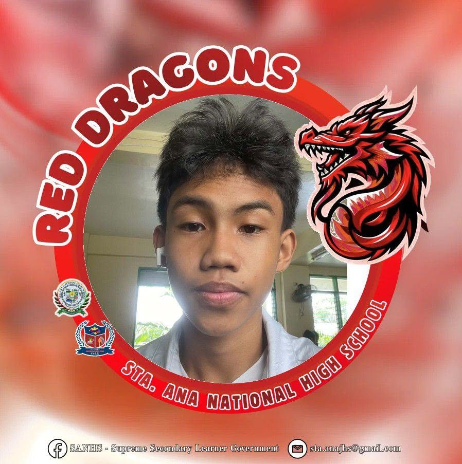
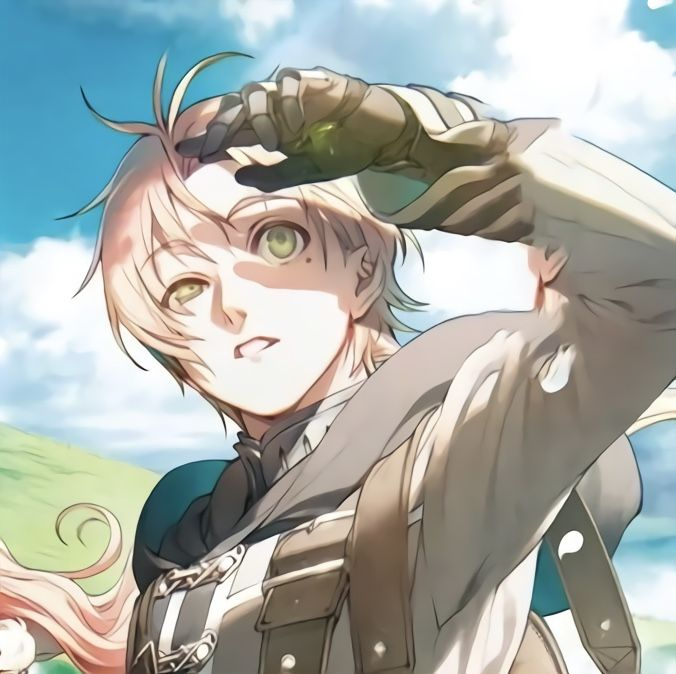

About Me
A little introduction to who I am.

Who Am I?
Hello! I'm Gaven Rossdale Valles, but you can simply call me Gav. I could say that I feel like I can do everything, yet sometimes I still don't know which direction to take or where to begin.
I have one older brother, and for some reason, he can be quite arrogant toward me. But honestly, I feel like showing off to your little brother is one of the best things an older brother can do.
My Journey
I've been working on this website for quite a long time. Unfortunately, I haven't always been consistent with it because of schoolwork and other personal reasons.
There were times when I couldn't give this project the attention it deserved. Still, I'm glad that I continued working on it, even if progress was slow.
My Inspiration
I have a very big dream. I wish to be just as amazing as Rudeus Greyrat and Subaru Natsuki. Even though I have my own goals and personal identity, I want to become someone as amazing and inspirational as them.

Rudeus Greyrat
Mushoku Tensei
Subaru Natsuki
Re:Zero
Looking Forward
I could say that I'm not particularly proud of what I'm doing at the moment because I know I've put in less effort than I could have. Nonetheless, I'm thankful that things are almost over.
I can finally sit down, relax, and reminisce about the past while imagining what the future might hold. There's still so much I want to experience, learn, and accomplish.